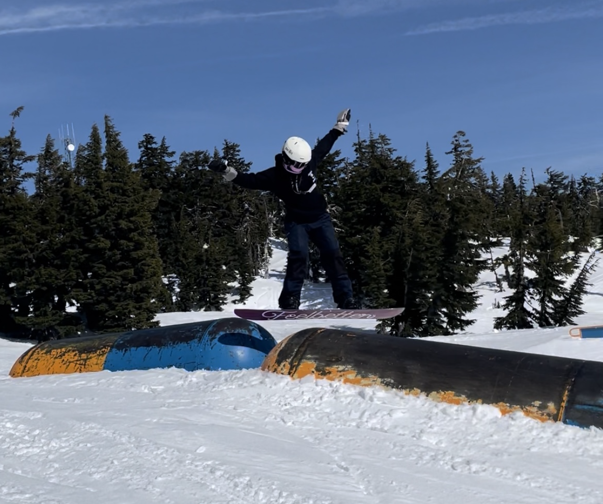
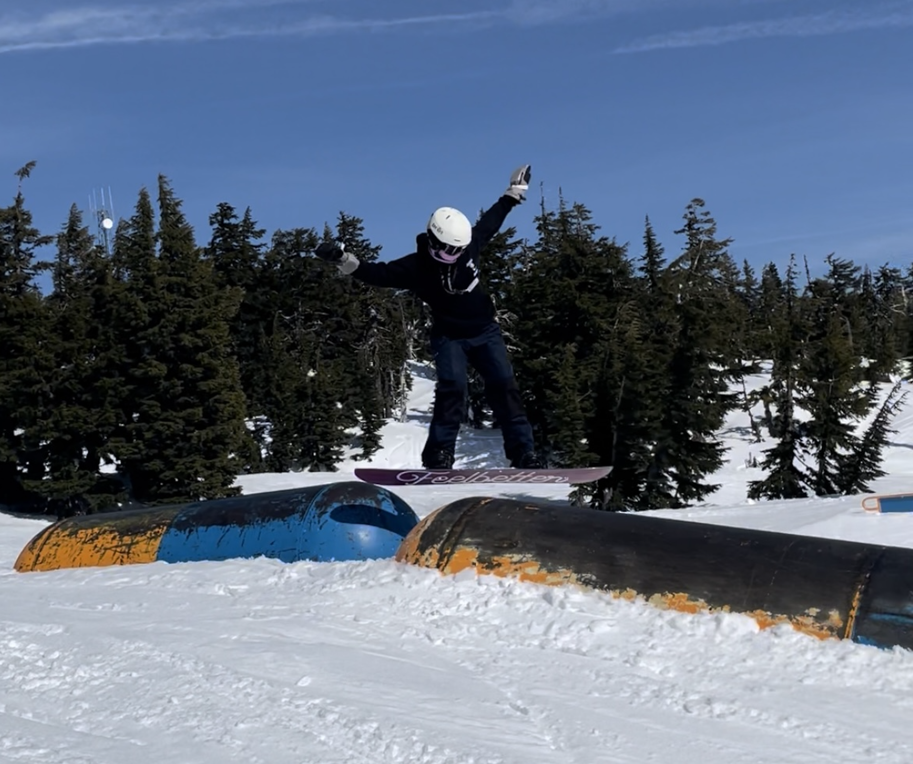

Timberline Lodge Ski Resort: A Historic and Year-Round Skiing Experience
Timberline Lodge Ski Resort is one of Oregon’s most iconic ski resorts on Mt. Hood offers a unique blend of history, breathtaking scenery, and year-round skiing. Whether you're a casual skier, a freestyle rider, or someone who simply appreciates a cozy alpine retreat, Timberline delivers a true Oregonian experience.
Atmosphere: A Resort with Character
Unlike modern large resorts, Timberline embraces its historic charm. The stunning, hand-crafted lodge, built in the 1930s, sets the stage for an old-school ski experience. The atmosphere is relaxed and welcoming, making it a great destination for families, beginner and intermediate skiers, and even professional athletes training on the Palmer Snowfield in the summer.


Terrain & Snow Conditions
Variety for All Levels: Timberline offers 1,415 acres of terrain, with gentle slopes for beginners and wide groomers for intermediates. The terrain is easy to navigate, making it ideal for families and newer skiers.
Advanced & Expert Terrain: The Palmer Snowfield and Magic Mile provide challenging runs for advanced skiers, with longer, sustained slopes and great spring conditions that allow you to pass through parks or trees.
Reliable Snowfall: Timberline averages 500 inches of snow annually and boasts the longest ski season in North America, thanks to the Palmer Glacier.
Lifts, Crowds & Amenities
Lift System: Timberline features a mix of high-speed quads and traditional chairlifts, including the Palmer Lift, which operates in the summer for year-round skiing.
Crowds: While Timberline is popular, especially during weekends and holidays, it tends to be less crowded than Meadows and offers plenty of space across its varied terrain.
Dining & Après-Ski: Dining options include the historic Cascade Dining Room, known for its hearty meals and mountain views, as well as the Ram's Head Bar and local favorite Y’Bar for more casual bites.
Lodging: Timberline is the only Mt. Hood resort with slopeside lodging, offering a unique chance to stay at the iconic Timberline Lodge—perfect for early morning first tracks or a cozy mountain getaway.
Value for Money
Timberline’s lift tickets are reasonably priced, especially compared to larger resorts, and season passes offer excellent value for frequent visitors.
Overall
If you’re looking for a ski resort with a laid-back atmosphere, rich history, and the rare opportunity to ski year-round, Timberline Lodge is a must-visit.